plot_digit <- function(row) {
digit_mat <- row |>
select(-digit)|>
as.numeric()|>
matrix(nrow = 28)
image(digit_mat[,28:1])
}ADM first challenge final report
Introduction
In class we have gone through the process of a creating a classifier to distinguish a 2 from 7 by using some predefined features, which correspond to the proportion of dark pixels in different quadrants of an image. Is there a solid way to classify between the numbers? It might be easy to distinguish these two numbers if it were just one person’s handwriting. However, we want to create a classifier such that we are able to distinguish between these two numbers given a large set of handwritten numbers. With everyone having their own distinct way of writing, how are we able to create a general classification such that we are able to distinguish between the 10 numbers? We are interested in distinguishing between the digits of 5 and 7. To do this, we have to create a classifier, which distinguishes a 5 from 7 by using some predefined features, which corresponds to the proportion of dark pixels of an image. In this challenge we will be using the mnist dataset to create an end-to-end classifier that distinguishes between two digits 5 and 7.
Image dataset
We begin our analysis with importing the mnist dataset, which includes 60,000 rows, which corresponds to 60,000 different handwritten digits. However, this takes up a lot of memory, so we decided to include the first 1000 rows in our initial analysis. Note how we use the function slide_head(n=1000) to grab the first 1000 rows of the mnist dataset. We call this new dataset mnist_5_7.
Our new dataset of mnist5_7 has 1000 observations and 875 variables. The first variable, digit, corresponds to what number is represented. The rest of the columns, V1:V784 correspond to the gray-scale values of each of the pixels from a 28 by 28 image.
Auxiliary functions (part 1)
We create a function that will allow us to visualize one of the rows of our dataset:
The function works by removing the first column (digit), then converting the row into a vector, and then into 28 by 28 matrix. Finally we use the image() function in R to plot the resulting (rotated) matrix. We use this function below to explore the images corresponding to the 16th, 12th, 30th and and 60th digit from our data set to understand the variations in the shape.:
pull(mnist5_7[16,], digit) # First image of a 5 [1] 5
Levels: 5 7plot_digit(mnist5_7[16,])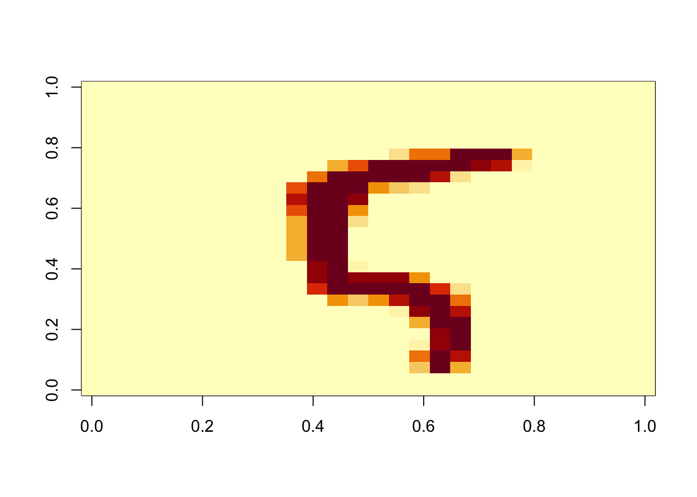
pull(mnist5_7[12,], digit) # First image of a 7[1] 7
Levels: 5 7plot_digit(mnist5_7[12,])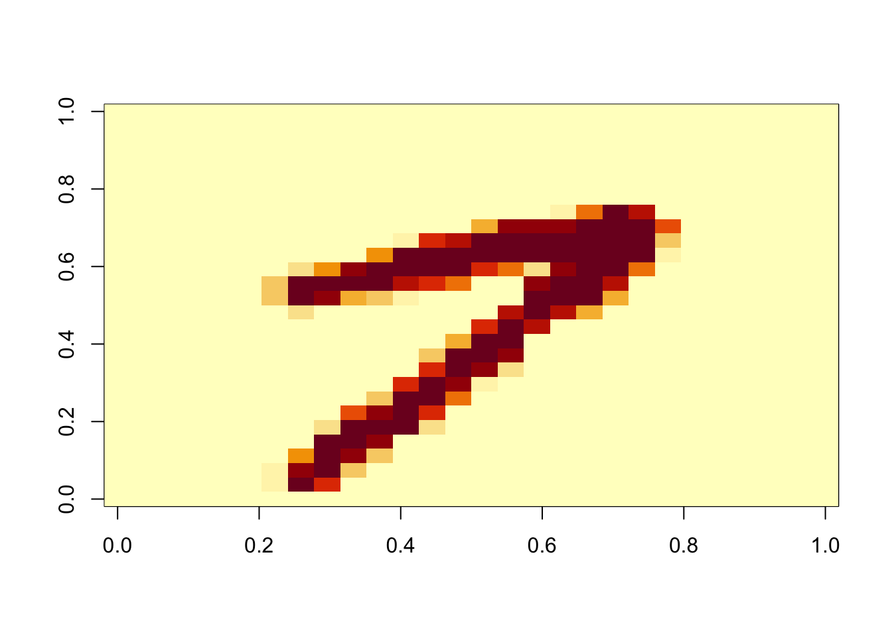
pull(mnist5_7[30,], digit) # Second image of a 5[1] 5
Levels: 5 7plot_digit(mnist5_7[30,])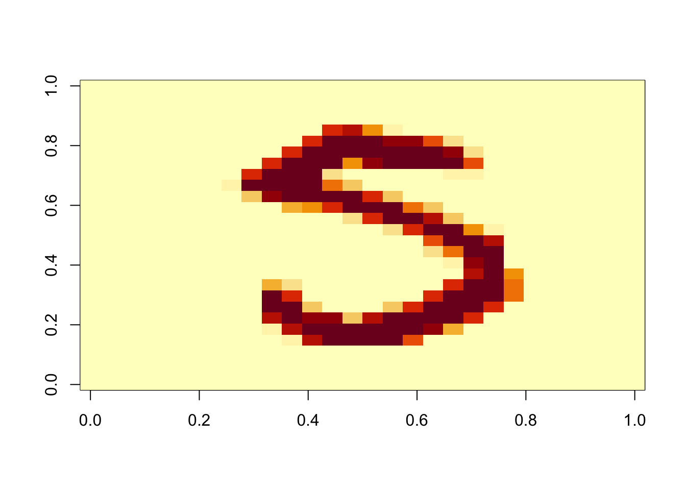
pull(mnist5_7[66,], digit) # Second image of a 7[1] 7
Levels: 5 7plot_digit(mnist5_7[66,])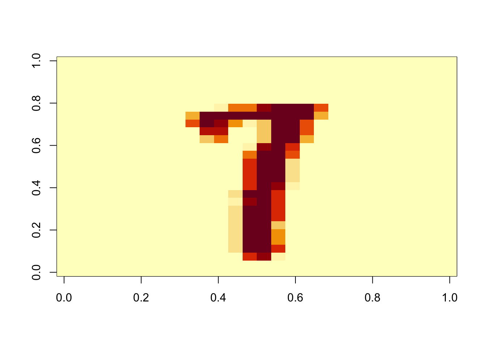
Region description
A region of an image can be defined by a 28 by 28 matrix of 0s and 1s, which can be represented as a text file where the rows are separated by “,” and where columns occur in different lines. For our regions selection, we wanted to be more creative and at the same time efficient so to maximize the area covered by both our digits 5 and 7 but minimizing the overlap. For region1, which represents digit 5, we’ve created a shape that intriguingly resembles the digit 7. This is a creative approach on our side because while the digit 5 has a different structure, by using the negative space of 7 we’re effectively creating a complementary shape that does not overlap with the actual 7 digit. Whereas, For region2, representing digit 7 to take a staggered form that extends diagonally across the matrix we aimed at creating a boomerang looking shape or a staircase shape to cover the distinctive features of the digit 7, like its horizontal line on the top and the angular line descending to the right. This pattern would occupy spaces that are less likely to be filled by the digit 5, which typically has a horizontal line at the lower part and a curve at the top right. Hence, for region2, the selection ensures that the main structural elements of 7 are highlighted without encroaching on the areas where 5 would be prominent.
Notice we are using col_names=FALSE, since region1.csv and region2.csv do not have column names.
Auxiliary functions (part 2)
Let’s define and use plot_region to see how this region looks. The function plot_region below is designed to visualize regions represented as binary matrices. It takes a single argument tbl, which is expected to be a table of values. Inside the function, this table is converted into a matrix and the values are multiplied by 128, suggesting that the binary 0 or 1 values in tbl are scaled up to create a grayscale image with pixel values of either 0 or 128. Then, the function image is used to display this matrix. However, before the matrix is passed to the image function, it is transposed using the t() function and then flipped along the vertical axis (as indicated by the [28:1] indexing), which effectively rotates the image for proper orientation. The purpose of this function is to plot the region of a digit from a 28 by 28 matrix, where the digit’s shape is represented in a format suitable for image display in R.
plot_region <- function(tbl) {
digit_mat <- as.matrix(tbl)*128 # Convert tbl into matrix and assign gray=128
image(t(digit_mat)[,28:1]) #Plot the image making sure is rotated
}
plot_region(region1)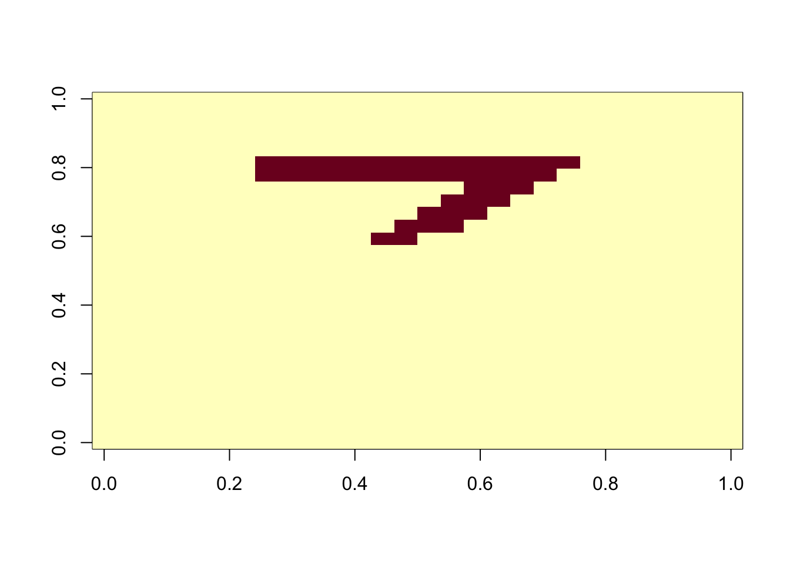
plot_region(region2)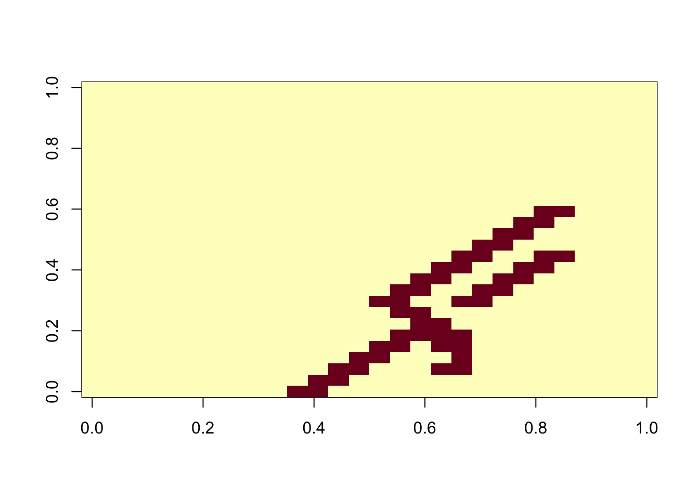
Now, given an image and a region, we would like to calculate the proportion of dark pixels of the image in the region. We can do that using the function calc_prop(). The calc_prop function is designed to determine the proportion of dark pixels within a certain region of an image. It takes a predefined region matrix where the value 1 indicates the relevant region, and a row vector representing pixel data from an image. The region matrix is rotated and flipped to align with the MNIST dataset’s image orientation. Next, the row vector is converted into numerical form, if it isn’t already, and reshaped into a 28x28 pixel matrix that represents the image, known as digit_mat. The function then identifies which pixels fall within the specified region and assesses whether these pixels are dark based on a threshold value (greater than 20 out of 255 in grayscale). It counts the dark pixels and calculates their proportion within the selected region, which is then returned as the output. This method is generally useful in image processing tasks where the density of dark pixels within specific areas needs to be analyzed, such as in handwriting recognition here.
calc_prop <- function (region, row) {
# Rotate "region" so is in same order as mnist images
region <- t(as.matrix(region))[,28:1]
# Take row from mnist and transform into a "digit" matrix
digit_mat <- row |>
as.numeric()|>
matrix(nrow = 28)
# Find positions of pixels from "region"
pos = (region==1)
# Subset "digit" to the positions and count dark pixels (grey>20)
dark = digit_mat[pos]>20
# Return proportion of dark pixels of "image" in "region"
return(sum(dark)/sum(pos))
}And we can use this function to calculate the proportion of dark pixels for the first, 5th and 13th image. Notice how we subset mnist5_7 tibble to a particular row, and only to the columns representing the pixels.
calc_prop(region1, mnist5_7[1,2:785])[1] 0.6341463calc_prop(region1, mnist5_7[5,2:785])[1] 0.2682927calc_prop(region1, mnist5_7[13,2:785])[1] 0.3414634calc_prop(region2, mnist5_7[1,2:785])[1] 0.1960784calc_prop(region2, mnist5_7[5,2:785])[1] 0.1568627calc_prop(region2, mnist5_7[13,2:785])[1] 0.254902We apply the function calc_prop to all the rows of a tibble by using rowwise(), combined with a mutate statement. Notice how inside the mutate command we use the c_across() to select the columns containing the pixel information. We do this for our both regions below:
# region 1
(tmp_tbl <- mnist5_7|>
rowwise()|>
mutate(area1=calc_prop(region1,c_across(V1:V784))) |>
select(digit,area1))# A tibble: 1,000 × 2
# Rowwise:
digit area1
<fct> <dbl>
1 5 0.634
2 5 0.146
3 7 0.390
4 7 0.317
5 5 0.268
6 7 0.366
7 7 0.268
8 5 0.683
9 7 0.390
10 5 0.293
# ℹ 990 more rows# region 2
(tmp_tbl_2 <- mnist5_7|>
rowwise()|>
mutate(area2=calc_prop(region2,c_across(V1:V784))) |>
select(digit,area2))# A tibble: 1,000 × 2
# Rowwise:
digit area2
<fct> <dbl>
1 5 0.196
2 5 0.176
3 7 0.392
4 7 0.275
5 5 0.157
6 7 0.314
7 7 0.176
8 5 0.157
9 7 0.451
10 5 0.137
# ℹ 990 more rowsNotice we can plot the proportion of dark pixels in region1 and region2 for each of the digit types it represents.
ggplot(tmp_tbl, aes(x=digit,y=area1))+ #5s
geom_boxplot()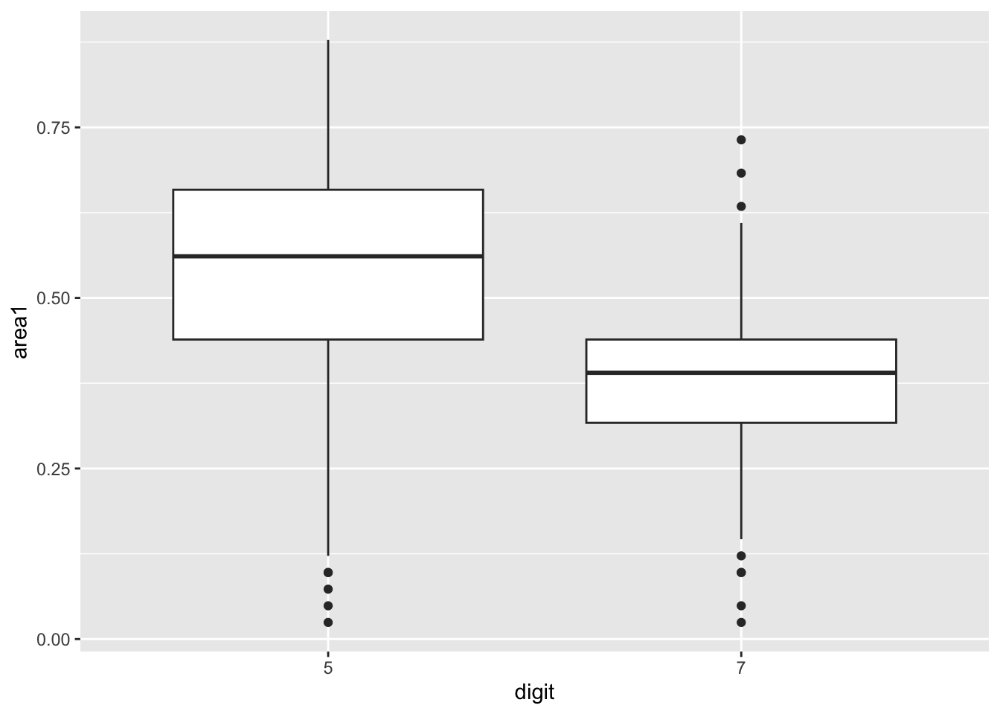
ggplot(tmp_tbl_2, aes(x=digit,y=area2))+ # 7s
geom_boxplot()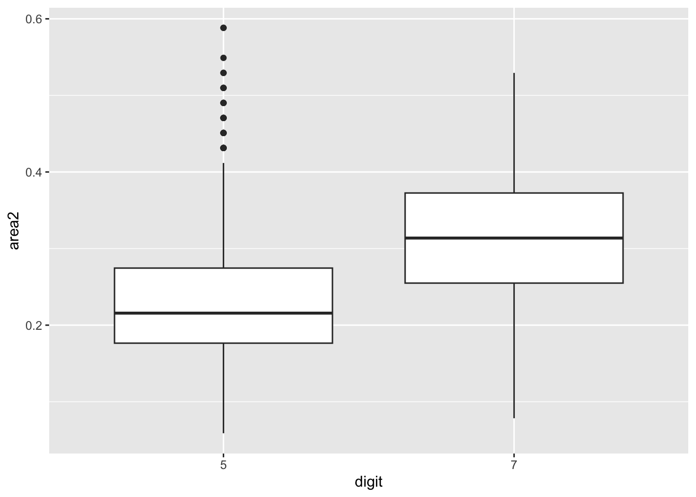
Feature dataset
We calculate the proportion of dark pixels across the two areas of interest (see section The proportion of dark pixels ..) using the mnist5_7 dataset and create a new tibble features_tbl that contains four columns: id, which is a consecutive number from 1 to 1000, digit which is a factor corresponding to our digit type, prop1 which corresponds to the proportion of dark pixels for region1, and prop2 which is the proportion of dark pixels for region2. The dataset is saved as mnist5_7.features.csv.
features_tbl <- mnist5_7|>
rowwise()|>
mutate(
prop1=calc_prop(region1,c_across(V1:V784)),
prop2=calc_prop(region2,c_across(V1:V784))) |>
select(digit,prop1, prop2) |>
ungroup() |>
tibble::rowid_to_column("ID")Initial plotting
The following code allows us to visualize the spread of values for “prop1” and “prop2” for the digits 5 and 7. We accomplish this by creating a ggplot using “features_tbl” as the data. Within this ggplot, we place the values of “prop1” on the x-axis and the values of “prop2” on the y-axis, and we use colors to differentiate the 5’s and 7’s. Finally, we use geom_point() to create a scatter plot of the data.
features_tbl |>
ggplot(aes(x = prop1, y = prop2, color = digit)) +
geom_point()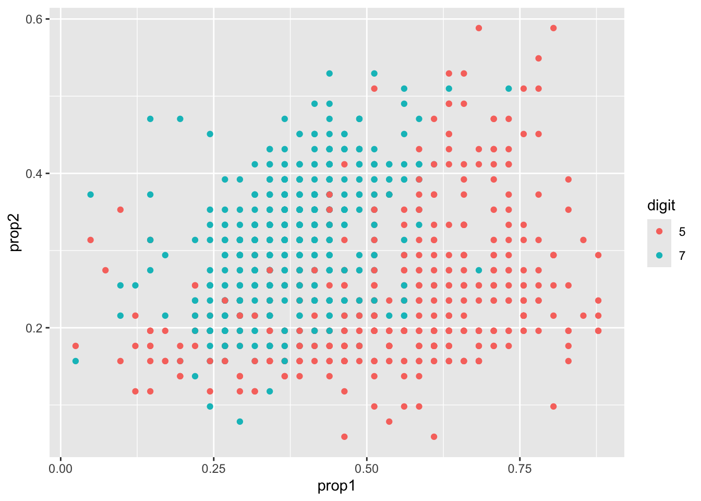
The scatter plot visualizes two variables, prop1 and prop2, which represent the proportion of dark pixels in the predefined regions for the digits 5 and 7. The blue points represent 7, and the red points represent 5. The separation between the clusters of blue and red points suggests that prop1 and prop2 are effective features for differentiating between the two digit types. Most of the blue points (for 7) are grouped together, as are the red points (for the 5), with a relatively clear boundary between them. This clustering indicates a good level of distinction between the digit types based on these features, which will be hopefully advantageous when developing our models. However, there are some overlapping areas where red and blue points are mixed, indicating areas where the digit representations share similar proportions of dark pixels for 5’s and 7’s. As such, our models will likely have more difficulty classifying digits in these areas.
Final report
Your final report should have all of the sections from your checkpoint report plus the following
Training/Testing definition
Using your features dataset (see section Feature Dataset) create training/testing datasets. Your training should have 800 observations and your testing should have 200 observations.
#Libraries
library(tidymodels)
tidymodels_prefer(quiet = TRUE)
set.seed(12345)
# Making sure the 'digit' column is a factor and only has levels 5 and 7
# features_tbl$digit <- factor(features_tbl$digit, levels = c(5, 7))
features_split <- initial_split(features_tbl, prop=0.8)
features_train_tbl <- training(features_split)
features_test_tbl <- testing(features_split)Model creation, optimization and selection
Create at least two different models for distinguishing the two different digit types using your two defined features. If the models have parameters (for example the k in KNN) make sure to find the optimal values of the parameters. Calculate the accuracy of each model in your dataset, select the model with the highest accuracy, and calculate the confusion matrix for the model with the highest accuracy
We’ve chosen two contrasting models: K-Nearest Neighbors (KNN) and Logistic Regression. The rationale for this choice lies in the complementary nature of the decision boundaries that each model constructs.KNN makes custom-fit decisions by closely examining its nearest data points. Its ability to capture the nuanced, subtle patterns in the dataset by considering the proximity of its neighbors makes it an excellent candidate for when the relationships within the data are complex and interwoven. Logistic Regression, on the other hand, takes on the role of a cartographer, drawing straight-line boundaries to divide the dataset into classes. Its strength lies in its straightforward approach, making it ideal for situations where a linear relationship does a good job of separating the classes. Choosing these two models allows us to explore and understand our dataset from two different perspectives: one that is intricately detailed and another that is elegantly straightforward. By comparing their performance, we hope to gain a deeper insight into the nature of our data and can make a more informed decision on which model best captures the underlying relationships between our variables.
The following code creates our multinomial logistic regression model. The model attempts to classify the digit based on the values of prop1 and prop2, and it is trained on the training data we created in the previous section. After creating the model, we also have code that tests the accuracy of the model, including the overall accuracy as well as the individual accuracies for 5’s and 7’s.
Logistic Regression Model
# Creating the model
library("glmnet")
logit_spec <- multinom_reg(mode = "classification",
engine = "nnet")
logit_recipe <- recipe(digit ~ prop1 + prop2,
data=features_train_tbl)
logit_wflow <- workflow() |>
add_recipe(logit_recipe) |>
add_model(logit_spec)
logit_model <- fit(logit_wflow, features_train_tbl)After we created the model, we were interested in finding out how accurate our model is. We augmented our
logit_model, which will give us the predictions of classifiying the digit as either a 5 or a 7.
# Calculating the overall accuracy
augment(logit_model, features_test_tbl) |>
accuracy(truth = digit, estimate = .pred_class)# A tibble: 1 × 3
.metric .estimator .estimate
<chr> <chr> <dbl>
1 accuracy binary 0.875# Calculating the accuracy for 5's
augment(logit_model, features_test_tbl) |>
filter(digit==5) |>
count(.pred_class) |>
mutate(freq = n/sum(n))# A tibble: 2 × 3
.pred_class n freq
<fct> <int> <dbl>
1 5 74 0.841
2 7 14 0.159# Calculating the accuracy for 7's
augment(logit_model, features_test_tbl) |>
filter(digit==7) |>
count(.pred_class) |>
mutate(freq = n/sum(n))# A tibble: 2 × 3
.pred_class n freq
<fct> <int> <dbl>
1 5 11 0.0982
2 7 101 0.902 Our logistic regression model has an overall accuracy of 87.5% when applied to the testing data. When breaking this accuracy down by digit, we see that our model has 84.1% accuracy for 5’s and 90.2% accuracy for 7’s.
KNN
For our second model we developed a K-Nearest Neighbors (KNN) classification model using auxiliary functions and the determination of the optimal number of neighbors (K) to ensure the best possible model accuracy. Firstly, we established auxiliary functions that allow us to generate and assess the KNN model systematically. The
create_knnfunction is designed to take in a specified number of neighbors (K) and a dataset, using these parameters to build a KNN model for classification purposes by we specifying the KNN algorithm, the mode of the model (classification), and the formula that describes the relationship between predictors and outcomedigithere. A function namedcalc_accuracy, which serves to evaluate the performance of our KNN model. It predicts the classes for a given dataset and then compares these predictions to the true labels to calculate the accuracy of the model. The following code creates a KNN model.
#KNN model generalized
# Creates a KNN classification model
create_knn <- function(k, tbl) {
knn_spec <- nearest_neighbor(neighbors = k) %>%
set_mode("classification") %>%
set_engine("kknn")
knn_recipe <- recipe(digit ~ prop1 + prop2, data=tbl)
knn_wflow <- workflow() %>%
add_recipe(knn_recipe) %>%
add_model(knn_spec)
knn_model <- fit(knn_wflow, tbl)
return(knn_model)
}KNN Accuracy function –auxiliary function
calc_accuracy <- function(knn_model, tbl) {
predictions <- predict(knn_model, tbl)$.pred_class
true_labels <- tbl$digit
mean(predictions == true_labels)
}In order to identify the optimal number of neighbors, we utilized a loop that iterates through a range of K values from 1 to 210 with a difference of 4. For each iteration, we generate a KNN model using our
create_knnfunction and then compute its accuracy on a test dataset using thecalc_accuracyfunction. The results are collected in a table that maps each K value to its corresponding accuracy.
Finding K optimal value:
optimal_k_tbl <- tibble(knear=numeric(),acc=numeric())
# keeping difference of 4 from 1-210 optimal values.
for (k in seq(1,210,4)) {
knn_model <- create_knn(k, features_train_tbl)
optimal_k_tbl <- optimal_k_tbl %>%
add_row(knear=k,
acc=calc_accuracy(knn_model, features_test_tbl))
}
optimal_k_tbl# A tibble: 53 × 2
knear acc
<dbl> <dbl>
1 1 0.83
2 5 0.87
3 9 0.89
4 13 0.895
5 17 0.9
6 21 0.92
7 25 0.92
8 29 0.92
9 33 0.92
10 37 0.92
# ℹ 43 more rowsPlot showing the accuracies of as optimal_k_tbl
optimal_k_tbl |>
ggplot(aes(knear,acc))+
geom_point()+
geom_line()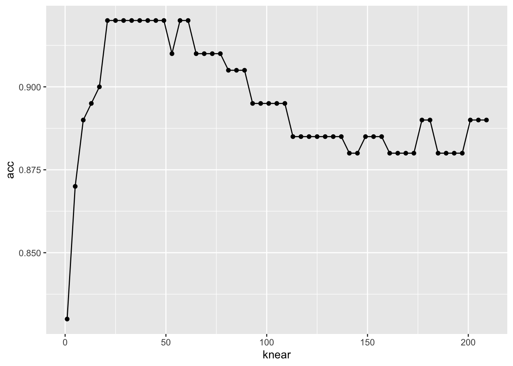
From the plot our optimal K is at many points such as 25, 29, 33 and 37 with accuracy of approximately 92%. To pinpoint the most suitable K value within this high-performing range, we employed the
slice_maxfunction, which extracts the rows associated with the maximum accuracy below.
Slice Max accuracy to confirm visualization results
optimal_k_tbl|>
slice_max(acc,n=1)# A tibble: 10 × 2
knear acc
<dbl> <dbl>
1 21 0.92
2 25 0.92
3 29 0.92
4 33 0.92
5 37 0.92
6 41 0.92
7 45 0.92
8 49 0.92
9 57 0.92
10 61 0.92The output confirmed that there are several K values tied for the highest accuracy, indicating that our model is robust to a range of neighbor values.
The K-Nearest Neighbors (KNN) model, demonstrating a superior accuracy rate of 92%, outperforms the Logistic Regression model, which has an accuracy of 87.5%. Consequently, based on its higher predictive accuracy, the KNN model is selected as the preferred algorithm for our classification task.
Building KNN with optimal K = 25
# Creating KNN model for 25 and calculate the confusion matrix
k_optimal = 25
knn <- create_knn(k_optimal, features_train_tbl)Confusion Matrix for KNN model
augment(knn, features_test_tbl) %>%
conf_mat(digit, .pred_class) Truth
Prediction 5 7
5 79 7
7 9 105The confusion matrix provides a detailed account of the K-Nearest Neighbors model’s classification accuracy for two classes of digits
5and7. The diagonal values (79 for ‘5’ and 105 for ‘7’) represent the number of times the model correctly predicted the true class. The off-diagonal values show the misclassifications. For the class labeled ‘5’, the model correctly predicted ‘5’ a total of 79 times and the model incorrectly predicted ‘7’ when it was actually ‘5’ a total of 7 times. Similarly, for the class labeled ‘7’, the model incorrectly predicted ‘5’ when it was actually ‘7’ a total of 9 times and the model correctly predicted ‘7’ a total of 105 times.
Checking accuracy of Individual digits: the proportion of correctly classified 5s and 7s.
augment(knn, features_test_tbl) |>
filter(digit==5) |>
count(.pred_class) |>
mutate(freq = n/sum(n))# A tibble: 2 × 3
.pred_class n freq
<fct> <int> <dbl>
1 5 79 0.898
2 7 9 0.102augment(knn, features_test_tbl) |>
filter(digit==7) |>
count(.pred_class) |>
mutate(freq = n/sum(n))# A tibble: 2 × 3
.pred_class n freq
<fct> <int> <dbl>
1 5 7 0.0625
2 7 105 0.938 When considering the accuracy of individual digits using our model, we notice that the model has 89.8% accuracy for 5’s and 93.8% accuracy for 7’s.
Decision boundary
Plot your model predictions across a grid in prop1 and prop2 using geom_raster()
##Plotting our KNN Model Across a Grid
# Create the two sequences so we are able to expand grid
prop1 <- seq(0,1,0.05)
prop2 <- seq(0,1,0.05)
# Expand prop1 and prop2
grid_tbl <- expand_grid(prop1, prop2)
decision_KNN <- augment(knn, grid_tbl)
ggplot(decision_KNN, aes(prop1, prop2, fill = .pred_class)) +
geom_raster() +
scale_fill_discrete() +
labs(title = "KNN Model")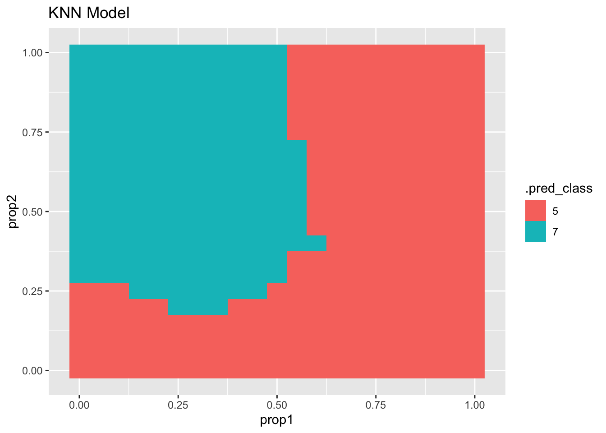
From our confusion matrix, we know that the digit 5 gets classified correctly 79 times, and the digit gets classified correctly 105 times. In the model above, the upper right hand corner represents the predicted class of 7, while the rest of the model represents the predicted class of 5. It seems like as we increase the proportion of dark pixels (in both the x and y axis), the model more accurately classifies the digit as 5. If we only increase the proportion of dark pixels in the y-axis, our classifer more successfully classifies the digit 7 more accurately.
Misclassifications
With any model, there are always misclassifications. Let us calculate and plot some of the misclassified digits. Here, we plotted two misclassified digits for each of the classes, for a total of 4 plots.
# Finding two missclassified 5's and two missclassified 7's
missed_fives <- augment(knn, features_test_tbl) |>
filter(digit == "5" & .pred_class == "7") |>
slice_head(n = 2)
missed_fives# A tibble: 2 × 7
.pred_class .pred_5 .pred_7 ID digit prop1 prop2
<fct> <dbl> <dbl> <int> <fct> <dbl> <dbl>
1 7 0.398 0.602 530 5 0.268 0.176
2 7 0.243 0.757 542 5 0.293 0.235missed_sevens <- augment(knn, features_test_tbl) |>
filter(digit == "7" & .pred_class == "5") |>
slice_head(n = 2)
missed_sevens# A tibble: 2 × 7
.pred_class .pred_5 .pred_7 ID digit prop1 prop2
<fct> <dbl> <dbl> <int> <fct> <dbl> <dbl>
1 5 0.898 0.102 35 7 0.341 0.118
2 5 0.787 0.213 228 7 0.195 0.157# Plotting the two missclassified 5's and the two missclassified 7's
plot_digit(mnist5_7[530,])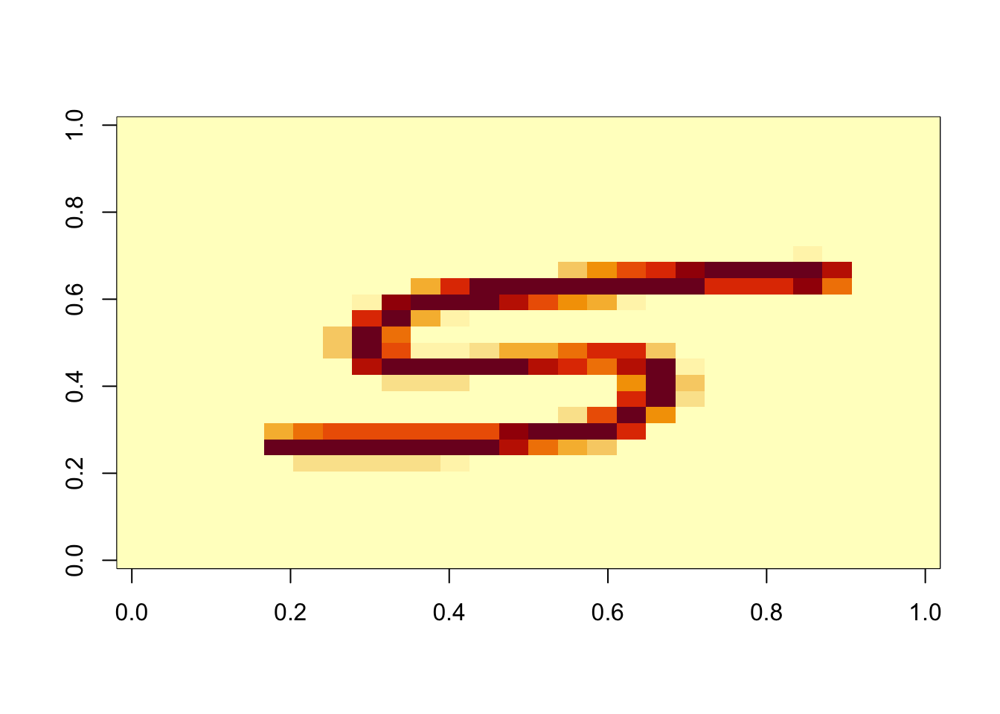
plot_digit(mnist5_7[542,])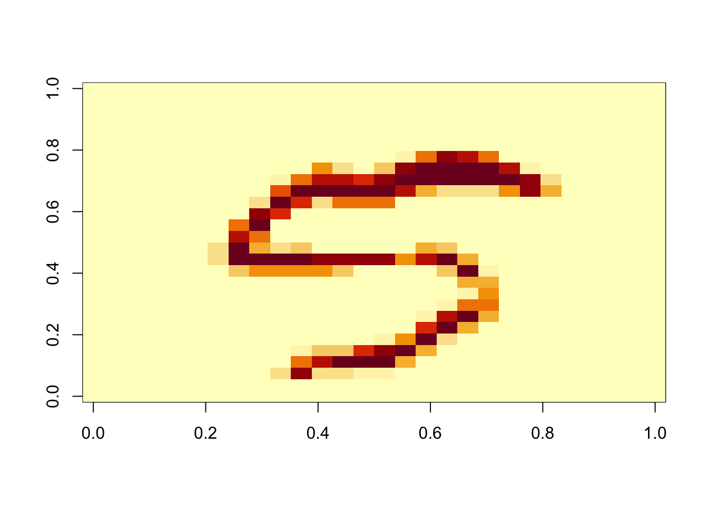
plot_digit(mnist5_7[35,])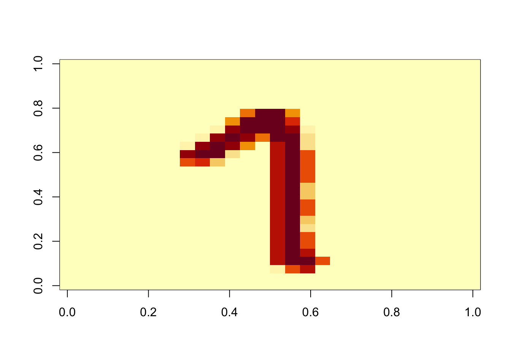
plot_digit(mnist5_7[228,])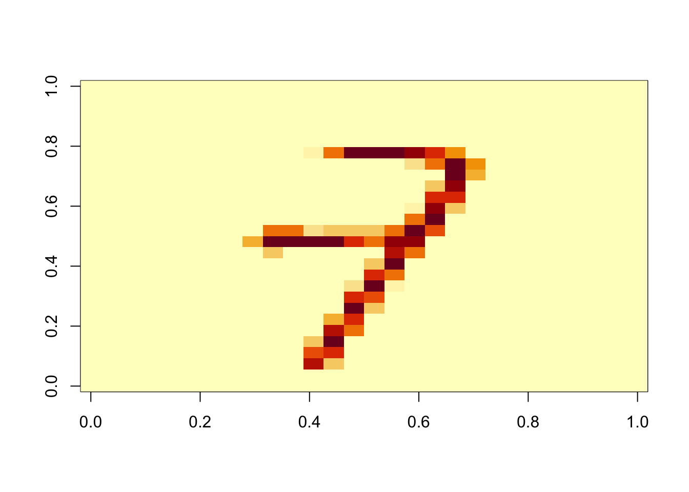
The first missclassified 5 had a prop1 value of 0.268 and a prop2 value of 0.176, with a 39.8% chance of being a 5 and a 60.2% chance of being a 7. The second missclassified 5 had a prop1 value of 0.293 and a prop2 value of 0.235, with a 20.3% chance of being a 5 and a 79.7% chance of being a 7.
The first digit of 5 got missclassified because we missed the handwritten region completely. Our predetermined region1 starts at the point 0.8; however, this particular individual’s five started at around 0.7. Even the diagional portion in our region1 did not capture the dark regions of the handwritten 5.
The second digit of 5 got misclassified because we only captured the top portion of the handwritten 5. In general, it seems like a lot of 5’s gets missclassified as 7’s because our region1 closely resembles the top portion of 7’s.
The first missclassified 7 had a prop1 value of 0.341 and a prop2 value of 0.118, with an 89.8% chance of being a 5 and a 10.2% chance of being a 7. The second missclassified 7 had a prop1 value of 0.195 and a prop2 value of 0.157 with a 78.7% chance of being a 5 and a 21.3% chance of being a 7.
The first digit of 7 got missclassified because our region2 completely missed the dark pixels of the handwritten 7. We tried to capture as many variations of the bottom portion of 7’s; however, we did not account for an individual to write in the middle.
The second digit of 7 got missclassified because we did not account for an individual to have a dash in the middle of the 7.
Changing things up
Pull 500 digit
6sfrommnistand add them to your image dataset. Save the dataset in your project folder asmnistX_Y_6.csv(X and Y are your assigned digits)Calculate
prop_1andprop_2on the new previous dataset, and create/save a new dataset asmnist_X_Y_6.features.csvin your project folder. Your dataset should have 4 columns (id,digit,prop1andprop2)
mnist_5_7_6_features <- mnist5_7_6 |>
rowwise() |>
mutate(
prop1 = calc_prop(region1, c_across(V1:V784)),
prop2 = calc_prop(region2, c_across(V1:V784))) |>
select(digit, prop1, prop2) |>
ungroup() |>
tibble::rowid_to_column("ID")- Split the previous dataset into training/testing datasets. Your training should have 1200 observations and your testing should have 300 observations.
set.seed(12345)
new_features_split <- initial_split(mnist_5_7_6_features, prop = 0.8)
new_features_train <- training(new_features_split)
new_features_test <- testing(new_features_split)- Re-train the model you selected in
Model Creation, optimization,...using the new training dataset.
new_features_train$digit <- factor(new_features_train$digit, levels = c(5,7,6))
new_features_test$digit <- factor(new_features_test$digit, levels = c(5,7,6))
optimal_k_tbl2 <- tibble(knear = numeric(), acc = numeric())
for (k in seq(1,210,4)) {
knn_model <- create_knn(k, new_features_train)
optimal_k_tbl2 <- optimal_k_tbl2 %>%
add_row(knear=k,
acc=calc_accuracy(knn_model, new_features_test))
}
optimal_k_tbl2# A tibble: 53 × 2
knear acc
<dbl> <dbl>
1 1 0.497
2 5 0.557
3 9 0.573
4 13 0.593
5 17 0.603
6 21 0.593
7 25 0.587
8 29 0.587
9 33 0.583
10 37 0.577
# ℹ 43 more rowsoptimal_k_tbl2 |>
ggplot(aes(knear, acc)) +
geom_point() +
geom_line()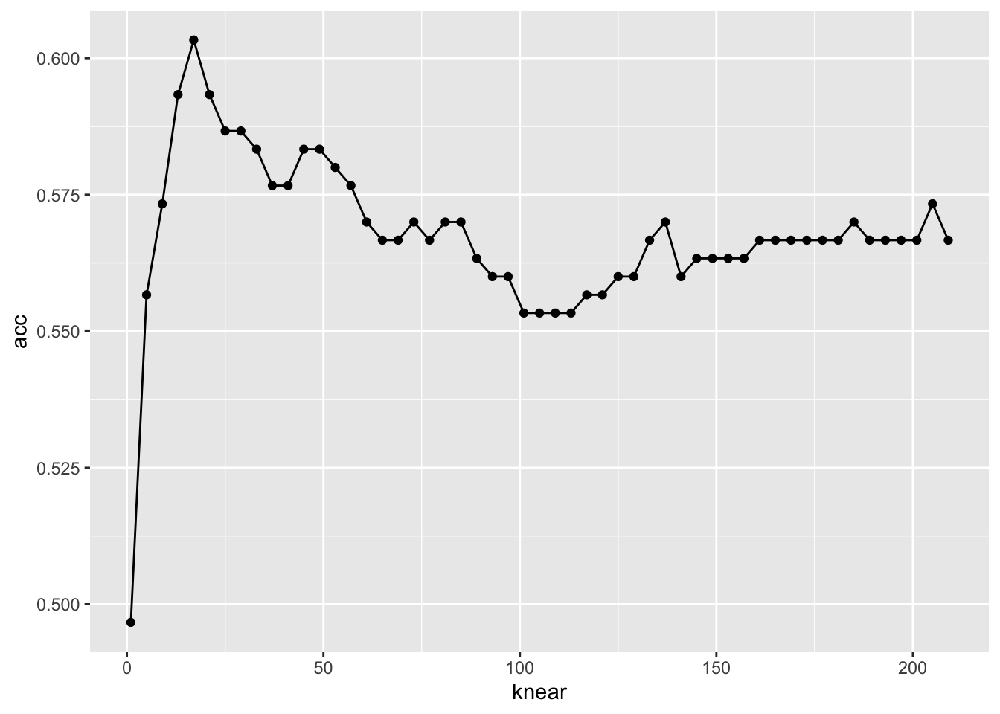
optimal_k_tbl2 |>
slice_max(acc, n = 1)# A tibble: 1 × 2
knear acc
<dbl> <dbl>
1 17 0.603- Calculate the accuracy of your retrained model on the new testing dataset. Calculate the confusion matrix of your model and comment on what digits seem to get confused more and why.
knn_conf2 <- create_knn(13, new_features_train)
augment(knn_conf2, new_features_test) |>
filter(digit == 5) |>
count(.pred_class) |>
mutate(freq = n/sum(n))# A tibble: 3 × 3
.pred_class n freq
<fct> <int> <dbl>
1 5 57 0.640
2 7 10 0.112
3 6 22 0.247augment(knn_conf2, new_features_test) |>
filter(digit == 7) |>
count(.pred_class) |>
mutate(freq = n/sum(n))# A tibble: 3 × 3
.pred_class n freq
<fct> <int> <dbl>
1 5 9 0.0833
2 7 77 0.713
3 6 22 0.204 augment(knn_conf2, new_features_test) |>
filter(digit == 6) |>
count(.pred_class) |>
mutate(freq = n/sum(n))# A tibble: 3 × 3
.pred_class n freq
<fct> <int> <dbl>
1 5 24 0.233
2 7 35 0.340
3 6 44 0.427augment(knn_conf2, new_features_test) |>
conf_mat(digit, .pred_class) Truth
Prediction 5 7 6
5 57 9 24
7 10 77 35
6 22 22 44The accuracy of this retrained model is 60%, with 64% accuracy for 5’s, 75% accuracy for 7’s, and 42.7% accuracy for 6’s. The confusion matrix for the (KNN) prediction of digits 5, 6, and 7 above suggests that there is a notable level of confusion between the digits 5 and 6. The model has misclassified the digit 5 as 6 a total of 24 times, and similarly, the digit 6 as 5 a total of 24 times, which is the highest off-diagonal count observed in the matrix. This pattern of confusion could potentially be attributed to the similar shapes and strokes involved in writing these two digits. For instance, both digits have a round component—the lower half of ‘5’ and 6’. When written quickly or with a particular style, the distinction between the two can become blurred. Additionally, the top part of a ‘5’ can sometimes resemble the loop of a ‘6’, especially if the ‘5’ is not properly closed or the ‘6’ is loosely written. Also, it is worth noting that 6’s tend to get misclassified more often than either 5’s or 7’s. This is because 6’s are often misclassified as either 5’s or 7’s, while 5’s are not often misclassified as 7’s and 7’s are not often misclassified as 5’s. This is likely because we were not considering 6’s when creating our regions and were instead aiming to create regions that would distinguish between 5’s and 7’s well (which the new model still appears to do fairly well).
- Plot the decision boundary for your model.
decision_KNN2 <- augment(knn_conf2, grid_tbl)
ggplot(decision_KNN2, aes(prop1, prop2, fill = .pred_class)) +
geom_raster() +
scale_fill_discrete() +
labs(title = "KNN Model with 6 included")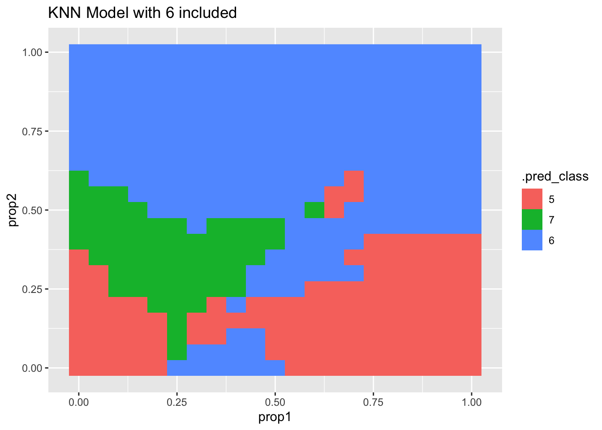
When we included the digit 6 into our classifier, it changed the predicted class regions completely. The predicted class of 5 has three distinct regions, one in the lower left hand corner, one near the middle, and another region on the lower right hand side. While the predicted class of 7 only has one distinct regions, which is in the middle left hand side. The most distinct region is the digit 6, which takes up the majority of the grid.